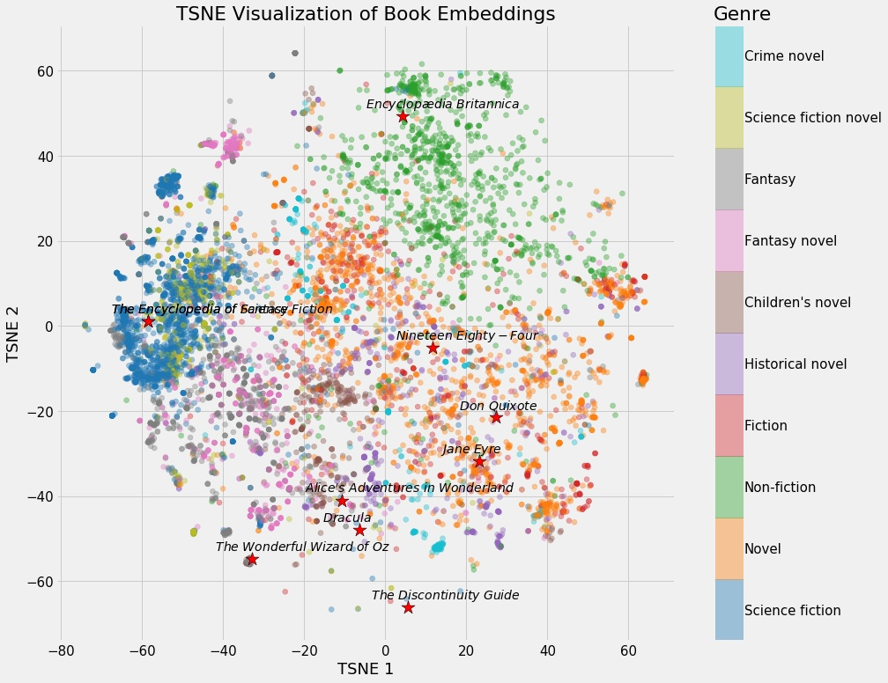
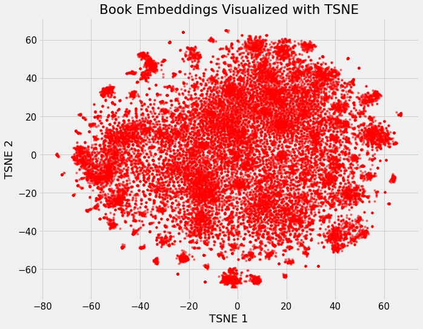
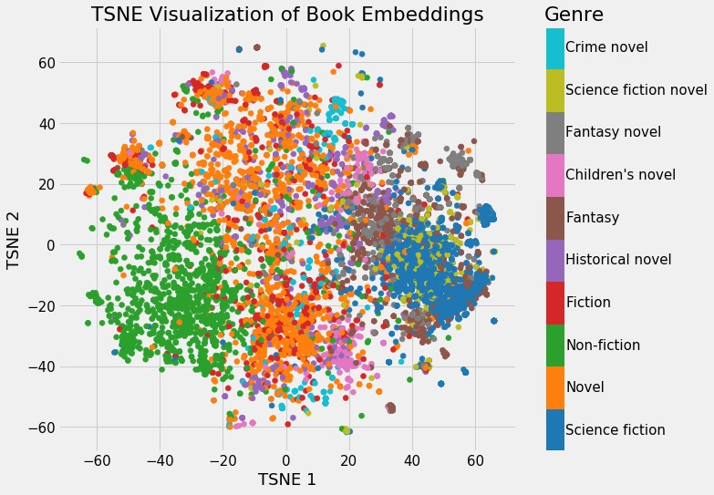

近年来，从计算机视觉到自然语言处理再到时间序列预测，神经网络、深度学习的应用越来越广泛。在深度学习的应用过程中，Embedding 这样一种将离散变量转变为连续向量的方式为神经网络在各方面的应用带来了极大的扩展。该技术目前主要有两种应用，NLP 中常用的 word embedding 以及用于类别数据的 entity embedding。
本篇文章主要介绍以下内容：
- 什么是 neural network embedding ？
- 我们为什么需要使用 neural network embedding？
- 以及 embedding 是如何自学习的？
本文中，将谈到这样一个例子，使用 neural network embedding 来表示所有维基百科上的书籍，可以通过这里访问到原作者的推荐系统项目。

Embedding 和 One Hot 编码
上面说了，Embedding 是一个将离散变量转为连续向量表示的一个方式。在神经网络中，embedding 是非常有用的，因为它不光可以减少离散变量的空间维数，同时还可以有意义的表示该变量。
我们可以总结一下，embedding 有以下 3 个主要目的：
- 在 embedding 空间中查找最近邻，这可以很好的用于根据用户的兴趣来进行推荐。
- 作为监督性学习任务的输入。
- 用于可视化不同离散变量之间的关系。
这也就意味对于上面我们所说的维基百科书籍表示而言，使用 Neural Network Embedding，我们可以在维基百科上获取到的所有 37,000 本书，对于每一篇，仅仅用一个包含 50 个数字的向量即可表示。此外，因为 embedding 是可学习的，因此在不断的训练过程中，更相似的书籍的表示在 embedding space 中将彼此更接近。
要了解 embedding 的优点，我们可以对应 One-hot 编码来观察。One-hot 编码是一种最普通常见的表示离散数据的表示，首先我们计算出需要表示的离散或类别变量的总个数 N，然后对于每个变量，我们就可以用 N-1 个 0 和单个 1 组成的 vector 来表示每个类别。这样做有两个很明显的缺点：
- 对于具有非常多类型的类别变量，变换后的向量维数过于巨大，且过于稀疏。
- 映射之间完全独立，并不能表示出不同类别之间的关系。
1 | # One Hot Encoding Categoricals |
因此，考虑到这两个问题，表示类别变量的理想解决方案则是我们是否可以通过较少的维度表示出每个类别，并且还可以一定的表现出不同类别变量之间的关系，这也就是 embedding 出现的目的。
1 | # Idealized Representation of Embedding |
而为了更好的表示类别实体，我们还可以是用一个 embedding neural network 和 supervised 任务来进行学习训练，以找到最适合的表示以及挖掘其内在联系。
One-hot 编码的最大问题在于其转换不依赖于任何的内在关系，而通过一个监督性学习任务的网络，我们可以通过优化网络的参数和权重来减少 loss 以改善我们的 embedding 表示，loss 越小，则表示最终的向量表示中，越相关的类别，它们的表示越相近。
上面给出维基百科的例子中，可能有这样的一个 supervised 任务，“预测这本书是否是 Leo Tolstoy 写的”，而我们最终产生的 embedding 则会让 Tolstory 写的书之间的表示更接近。因此弄清楚如何创建监督学习任务和产生相关表示是 embedding 表示的关键。
Embedding 可视化
Embedding 最酷的一个地方在于它们可以用来可视化出表示的数据的相关性，当然要我们能够观察，需要通过降维技术来达到 2 维或 3 维。最流行的降维技术是：t-Distributed Stochastic Neighbor Embedding (TSNE)。
我们可以定义维基百科上所有书籍为原始 37,000 维，使用 neural network embedding 将它们映射到 50 维，然后使用 TSNE 将它们映射到 2 维，其结果如下：

这样看好像并不能看出什么，但是如果我们根据不同书籍的特征着色，我们将可以很明显的看出结果。

我们可以清楚地看到属于同一类型的书籍的分组。虽然它并不完美，但惊奇的是，我们只用 2 个数字就代表维基百科上的所有书籍，而在这些数字中仍能捕捉到不同类型之间的差异。这代表着 embedding 的价值。
静态图的问题在于我们无法真正探索数据并调查变量之间的分组或关系。 为了解决这个问题，TensorFlow开发了 projector，这是一个在线应用程序，可以让我们可视化并与 embedding 交互。 结果如下：

总结
Embedding 的基本内容如前面介绍所示，然而我想说的是它的价值并不仅仅在于 word embedding 或者 entity embedding，这种将类别数据用低维表示且可自学习的思想更存在价值。通过这种方式，我们可以将神经网络，深度学习用于更广泛的领域，Embedding 可以表示更多的东西，而这其中的关键在于要想清楚我们需要解决的问题和应用 Embedding 表示我们得到的是什么。